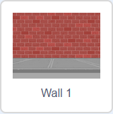
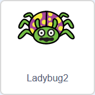
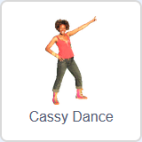
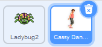

7. Catching bugs¶
En esta práctica vamos a programar un juego que consiste en atrapar todos los escarabajos que aparecen en la pantalla. Una vez atrapados, ganamos el juego y un personaje nos avisa de ello.

We start the Scratch editor.
Click language button
 upper menu bar and select English.
upper menu bar and select English.Delete the cat sprite by pressing on the icon of the trash can.

Ahora escogemos un fondo adecuado para nuestro juego. Cambiamos el fondo de escenario a una pared de una calle.
Press the button choose a backdrop
 .
.Search in the topic Exteriores.
and select the backdrop Wall 1.
A continuación añadimos un nuevo personaje, un escarabajo.
Press the button choose an object
 .
.Search in the topic Animales.
and select the object Ladybug2.
Ahora crearemos la variable clones que va a contar el número de escarabajos que hay en la pantalla. Cuando esta variable valga cero, el programa terminará.
Press the variables button
 ,
,click on create a variable
 .
.Change the name of the variable to clones

Finally press the button Ok
Realizamos un programa que esconde el escarabajo, reduce su tamaño, inicia el número de clones a cero y coloca diez clones del escarabajo en la pantalla.

En este punto añadimos las instrucciones para que cada clon del escarabajo aparezca en un lugar aleatorio en la pantalla y se aumenta el número de escarabajos en uno.
Cuando el puntero del ratón toque el escarabajo, se resta uno al contador de escarabajos y el escarabajo desaparece.

Press the green flag
 to test the operation of the program.
to test the operation of the program.Deben aparecer diez escarabajos en la pantalla. Los escarabajos deben desaparecer cuando el puntero del ratón les toque, sin hacer clic.
Para que el juego funcione normalmente, programamos la función que hará aparecer nuevos escarabajos cada cierto tiempo. Cuando el número de escarabajos en pantalla sea cero, el juego termina y el programa se detiene.

Por último vamos a programar un personaje que avise del final del juego. En este caso escogemos a Cassy bailando.
Press the button choose an object
.Search in the topic Gente.
and select the object Cassy Dance.
Seleccionamos el nuevo personaje
y añadimos las siguientes instrucciones.

Press the green flag
to test the operation of the program.Ahora, al finalizar el programa, aparecerá Cassy bailando para felicitarnos por haber ganado.
Ejercicios¶
- Añade una nueva regla al juego. Si el número de escarabajos es mayor que 25, entonces perdemos el juego. El programa se detiene y un personaje nuevo nos avisa de que hemos perdido.
- Añade más disfraces al personaje del escarabajo, de manera que con cada clon aparezca un disfraz distinto, utilizando la instrucción "siguiente disfraz" en el lugar adecuado.